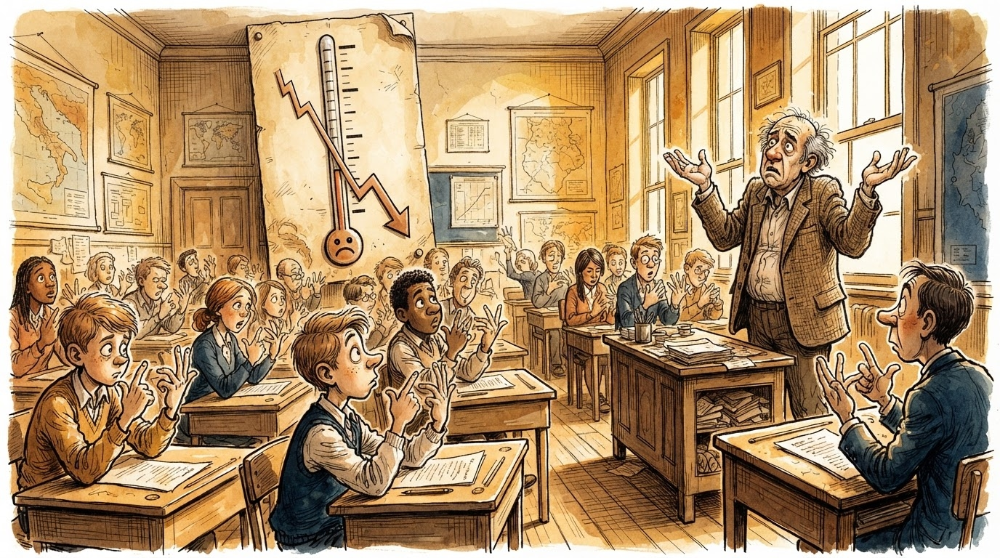

1+1=3
Rekordi ynë botëror
Edukim
Gazeta Satirike e Kosovës dhe Shqipërisë — lajme që nuk duhet t'i besoni, por i lexoni gjithsesi
Rezultati zyrtar: asnjë përmirësim, asnjë rënie e madhe. Redaksia e quan këtë "barazia më e madhe e vitit".

Rezultatet e testit ndërkombëtar PISA 2025 u publikuan, dhe verdikti zyrtar është: Kosova mbetet "përafërsisht në të njëjtin nivel" me ciklin e mëparshëm, me rënie të veçantë në matematikë — një lajm që Ministria e Arsimit e quajti "stabilitet", ndërsa opozita e quajti "provim i dështuar i vetë qeverisë".
"Nuk kemi rënë, thjesht nuk kemi ngjitur", shpjegoi një zyrtar arsimor, duke qëndruar pranë një grafiku që dukej i sheshtë si tavolina e klasës. "Sheshtësia është një formë e qëndrueshmërisë."
"Rezultati tregon se sistemi ynë arsimor është aq i qëndrueshëm sa nuk lëviz fare — në asnjë drejtim." — një zëdhënës i palëve politike, që të dyja palët e kanë cituar për arsye të kundërta
Ironikisht, rënia më e theksuar u shënua pikërisht në matematikë — lëndë që redaksia jonë e ka mjeshtëruar prej kohësh me formulën zyrtare "1+1=3". Disa analistë sugjerojnë se nëse Ministria do të pranonte metodën tonë, rezultatet do të ishin "matematikisht të papërmirësueshme, por psikologjikisht më të gëzueshme".
Opozita kërkoi përgjegjësi konkrete, ndërsa qeveria u përgjigj se "përgjegjësia është koncept relativ, ashtu si vetë rezultati i PISA-s". Të dyja palët ranë dakord të mos bien dakord, çka analistët tanë e quajnë "konsensusi më i madh i arritur këtë vit".
Ministria premtoi reforma të reja për ciklin e ardhshëm, të cilat, sipas burimeve tona, do të fillojnë "sapo të gjendet dikush që t'i shkruajë".